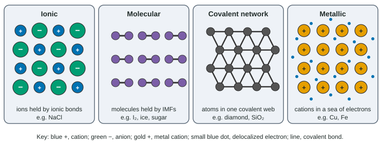

Properties of Solids
Solids are ionic, metallic, molecular or covalent network.
Part 1 · Hook
Why this matters
Part 2 · Before you start
What this builds on
Part 3 · Prerequisite check
Quick check before you start
1. Why does a solid ionic compound fail to conduct electricity?
- Its ions are fixed in the lattice
- It has no charged particles
- Its electrons are delocalized
Show the answer
The ions carry charge but cannot move until the solid melts or dissolves.
- Correct: Its ions are fixed in the lattice:
- It has no charged particles:
- Its electrons are delocalized:
2. What makes metals malleable?
- Layers of cations slide within the sea of electrons
- Their covalent bonds bend easily
- Their ions repel each other
Show the answer
Metallic bonding is not tied to particular atoms, so layers slide without breaking it.
- Correct: Layers of cations slide within the sea of electrons:
- Their covalent bonds bend easily:
- Their ions repel each other:
3. Which attraction holds I₂ molecules to each other?
- London dispersion forces
- Hydrogen bonds
- Ionic bonds
Show the answer
I₂ is nonpolar, so its molecules attract only by dispersion forces.
- Correct: London dispersion forces:
- Hydrogen bonds:
- Ionic bonds:
Part 4 · See it
See it first

Part 5 · Step by step
How it works, step by step
- Molecular solids are separate molecules held only by intermolecular forcesmelting overcomes weak attractions, so they melt low and are soft
- Molecules carry no net charge and have no free electronsmolecular solids do not conduct in any state
- In a covalent network every atom is covalently bonded to its neighborsmelting must break covalent bonds, so network solids melt very high and are very hard
- A network's valence electrons are locked in bonds (graphite's layers excepted)most network solids do not conduct
Part 6 · Key ideas
Key ideas
- Ask what the particles are and what holds them: ions (ionic bonds), cations and electrons (metallic), molecules (IMFs) or atoms (covalent network).
- Molecular solids melt low and never conduct; covalent network solids melt very high and are very hard.
- Crystalline solids have repeating order and sharp melting points; amorphous solids soften over a range.
Part 7 · Misconception
A common mistake
The wrong idea: Molecular solids melt low because their covalent bonds are weak.
What actually happens: Melting a molecular solid breaks no covalent bonds. It only overcomes the intermolecular forces between molecules, which are much weaker than covalent bonds.
Part 8 · Check yourself
Check yourself
Exam-style questions. Anything you miss goes into your review queue.
Data table
Four unknown solids
A student tests four white or gray solids, W to Z.
| Solid | Melting point (°C) | Conducts as a solid? | Conducts when melted? | Hardness |
|---|---|---|---|---|
| W | 801 | No | Yes | Hard, shatters when struck |
| X | 114 | No | No | Soft, crumbles |
| Y | 1,710 | No | No | Very hard |
| Z | 660 | Yes | Yes | Bends without breaking |
1. Which solid is most likely a molecular solid?
- W
- X
- Y
- Z
Show the answer
X melts low (114 °C), is soft and conducts in neither state. Low melting means only weak intermolecular forces hold the particles together, and no conduction means no ions or free electrons.
- W: W conducts only when melted, the signature of an ionic solid whose ions become free to move.
- Correct: X: Right: low melting point, soft, no conduction.
- Y: Y melts at 1,710 °C, far too high for a solid held by intermolecular forces.
- Z: Z conducts as a solid and bends, which marks a metal.
2. Which explanation accounts for solid Y's very high melting point and lack of conductivity?
- Its atoms form one covalent network, so melting breaks covalent bonds and no charges can move.
- Its molecules form many hydrogen bonds to each other, which are strong enough to keep it solid at 1,700 °C.
- Its ions are held by very strong ionic bonds, and ions do not carry a current even when the solid has melted into a liquid.
- It is a metal whose electrons are held so tightly that they stay put, which raises the melting point.
Show the answer
Only breaking covalent bonds explains a melting point near 1,710 °C in a nonconductor. In a covalent network, all valence electrons are in bonds, so nothing carries a charge.
- Correct: Its atoms form one covalent network, so melting breaks covalent bonds and no charges can move.: Right: a covalent network solid such as quartz.
- Its molecules form many hydrogen bonds to each other, which are strong enough to keep it solid at 1,700 °C.: Hydrogen bonds are intermolecular forces; no molecular solid stays solid anywhere near 1,700 °C.
- Its ions are held by very strong ionic bonds, and ions do not carry a current even when the solid has melted into a liquid.: An ionic solid conducts once melted, and Y does not, so Y is not ionic.
- It is a metal whose electrons are held so tightly that they stay put, which raises the melting point.: A metal conducts as a solid because of its delocalized electrons; Y does not.
3. A fifth solid, V, melts at 186 °C and does not conduct when melted. Which conclusions are supported? Select all that apply.
- V is a molecular solid.
- V's covalent bonds break when it melts.
- V contains no free ions or electrons.
- V is an ionic solid with small ions.
Show the answer
A low melting point means only intermolecular forces hold the particles, so V is molecular, and no conduction when melted means it has no ions or free electrons. (Sucrose fits.)
- Correct: V is a molecular solid.: Right: a low melting point points to intermolecular forces between molecules.
- V's covalent bonds break when it melts.: Melting a molecular solid overcomes intermolecular forces; its covalent bonds stay intact.
- Correct: V contains no free ions or electrons.: Right: a melted ionic or metallic solid would conduct.
- V is an ionic solid with small ions.: A melted ionic solid conducts, and V does not.
Particle view
Particle views of four solids
Key: blue +, cation; green −, anion; gold +, metal cation; small blue dot, electron; line, covalent bond; purple pair, a two-atom molecule.
4. Which box best represents solid iodine, I₂?
- Box 1
- Box 2
- Box 3
- Box 4
Show the answer
Iodine is made of separate I₂ molecules. Each pair is joined by a covalent bond, and the pairs are held to each other only by dispersion forces.
- Correct: Box 1: Right: separate two-atom molecules.
- Box 2: Iodine contains no ions; I₂ is a neutral molecule of one element.
- Box 3: In a network every atom bonds to several neighbors; each iodine atom bonds to just one other.
- Box 4: Iodine is a nonmetal, so it has no cations in a sea of electrons.
5. The substance in box 1 melts far lower than the substance in box 3. Which reasoning is correct?
- Melting box 1 overcomes intermolecular forces; melting box 3 breaks covalent bonds.
- The covalent bonds in box 1 are weaker than the covalent bonds in box 3, so they break at a lower temperature.
- Box 1 has fewer atoms in the drawing than box 3, so less energy is needed to melt each gram of it.
- Box 3 contains ions that attract each other strongly through ionic bonds, while box 1 contains neutral atoms that attract each other far less.
Show the answer
Melting a molecular solid pulls whole molecules apart; the bonds within each pair are untouched. Melting a network requires breaking covalent bonds, which takes far more energy.
- Correct: Melting box 1 overcomes intermolecular forces; melting box 3 breaks covalent bonds.: Right: intermolecular forces versus covalent bonds.
- The covalent bonds in box 1 are weaker than the covalent bonds in box 3, so they break at a lower temperature.: Melting box 1 does not break its covalent bonds at all.
- Box 1 has fewer atoms in the drawing than box 3, so less energy is needed to melt each gram of it.: The number of atoms drawn is a sampling choice, not a cause of melting point.
- Box 3 contains ions that attract each other strongly through ionic bonds, while box 1 contains neutral atoms that attract each other far less.: Box 3 contains neutral atoms joined by covalent bonds; there are no ions.
6. Dry ice, CO₂(s), turns to gas at −78 °C, while quartz, SiO₂(s), melts near 1,710 °C. Which statement explains the difference?
- Solid CO₂ is molecules held by dispersion forces; quartz is a Si–O covalent network.
- Si–O bonds are polar while C=O bonds are not, so quartz molecules attract each other more strongly.
- Quartz molecules are heavier than CO₂ molecules, so they need more energy to leave the solid.
- Quartz is an ionic solid made of Si⁴⁺ and O²⁻ ions, while CO₂ is made of neutral molecules.
Show the answer
The formulas look alike, but CO₂ forms small molecules and SiO₂ forms an endless network. Changing CO₂ to a gas pulls molecules apart; melting quartz breaks Si–O covalent bonds.
- Correct: Solid CO₂ is molecules held by dispersion forces; quartz is a Si–O covalent network.: Right: molecular solid versus covalent network.
- Si–O bonds are polar while C=O bonds are not, so quartz molecules attract each other more strongly.: C=O bonds are polar too; and quartz has no separate molecules to attract.
- Quartz molecules are heavier than CO₂ molecules, so they need more energy to leave the solid.: Quartz has no separate molecules at all, so molecule mass is the wrong idea.
- Quartz is an ionic solid made of Si⁴⁺ and O²⁻ ions, while CO₂ is made of neutral molecules.: Si–O bonds are polar covalent, and molten quartz does not conduct like an ionic liquid.
Part 9 · Summary
Summary
Part 10 · Up next
What comes next
Part 11 · Connections